📷 Fotos dos Quadros
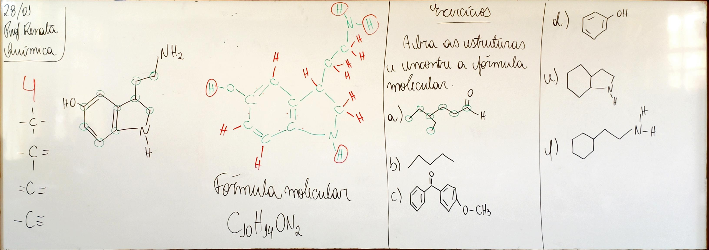 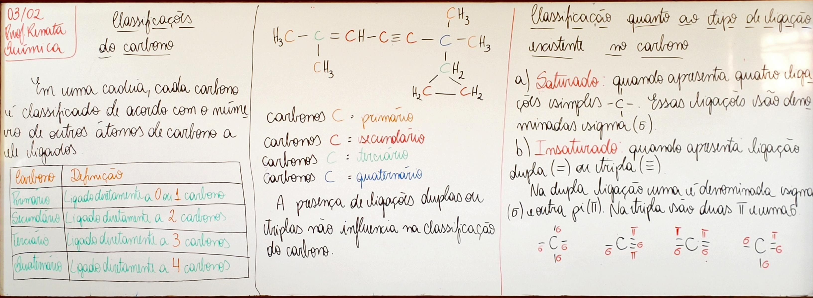
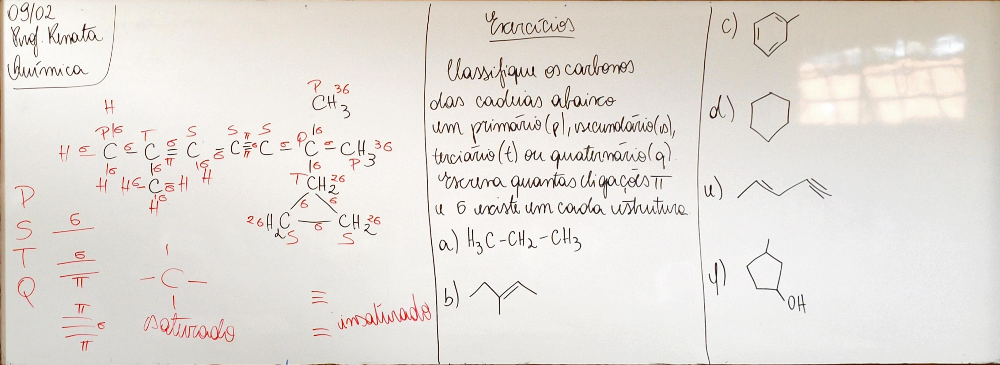
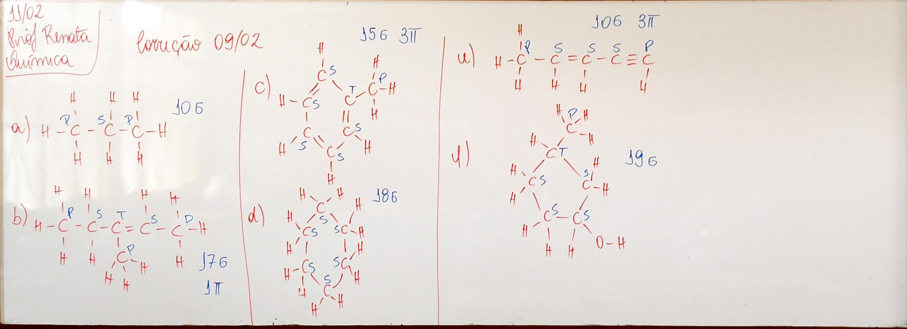
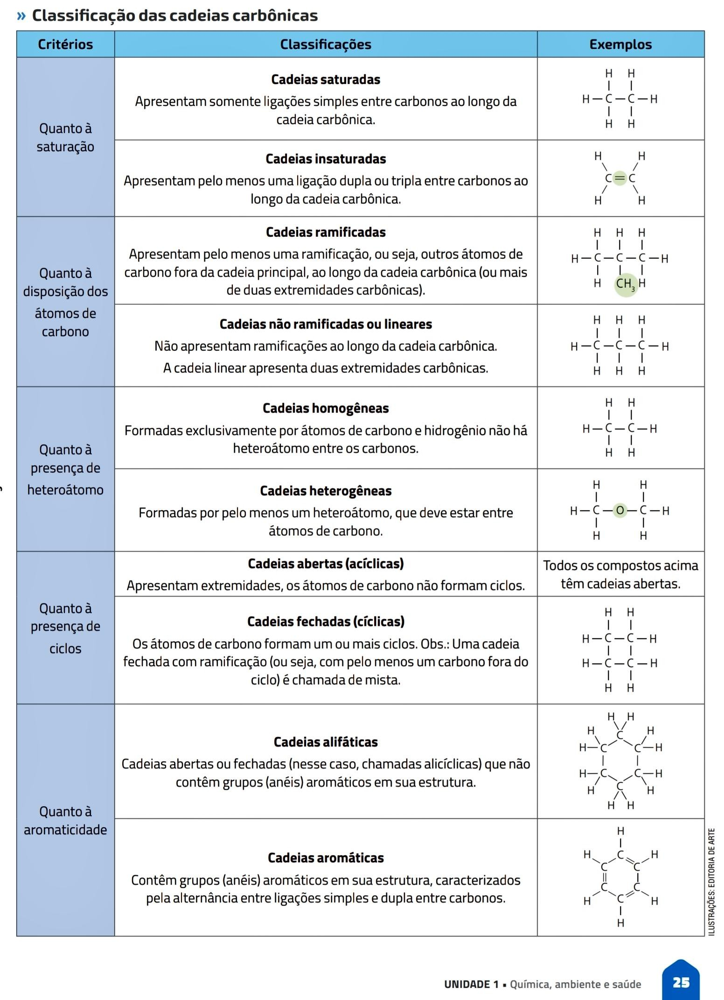
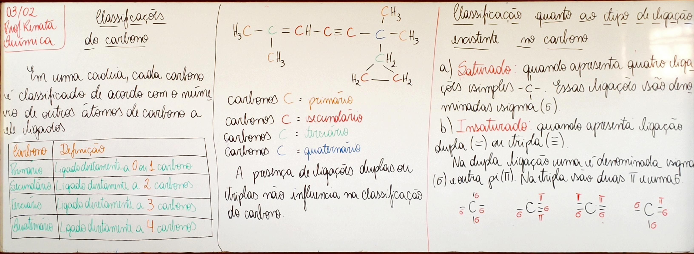
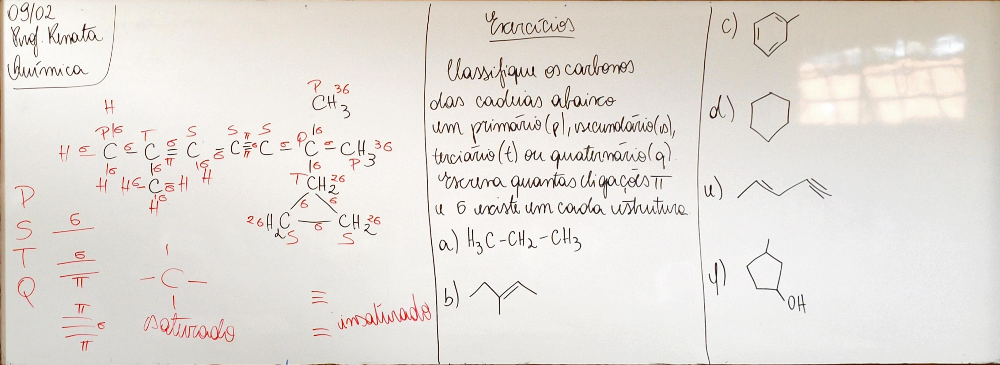
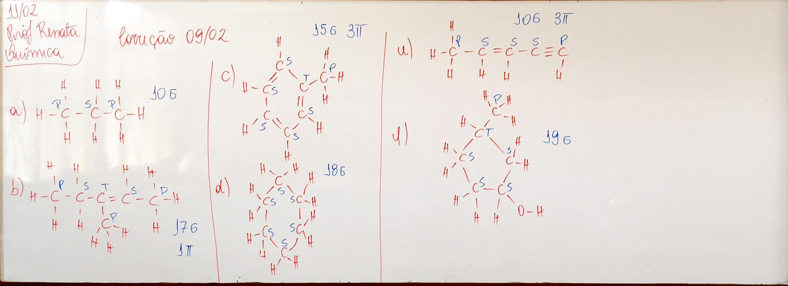
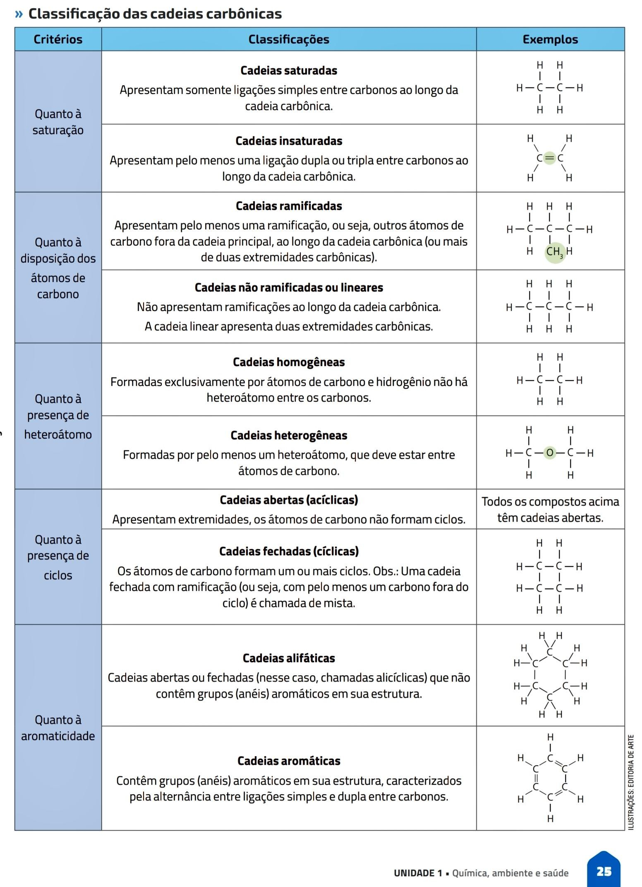
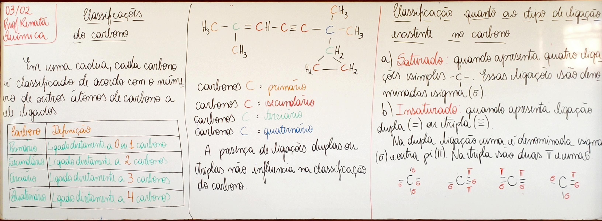
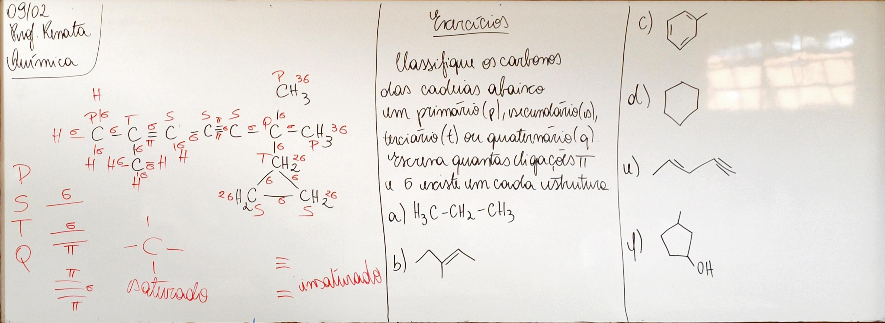
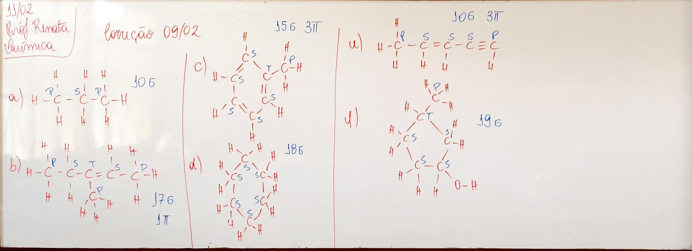
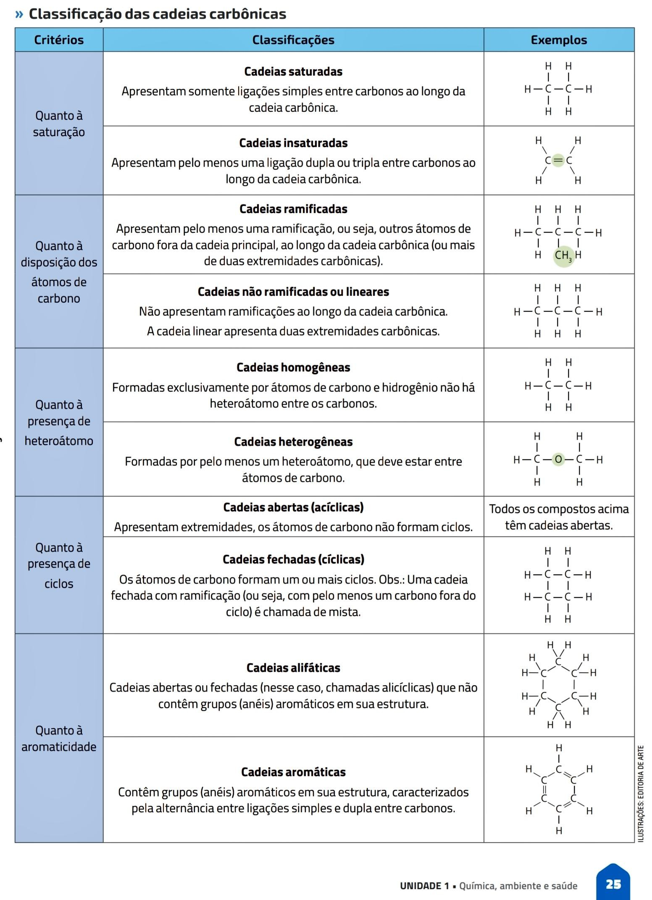
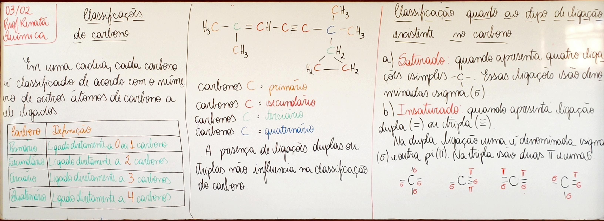
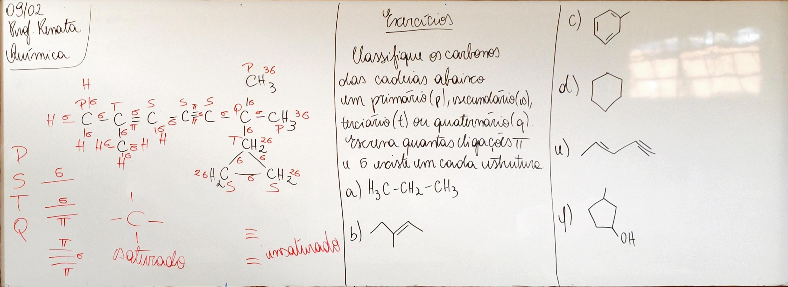
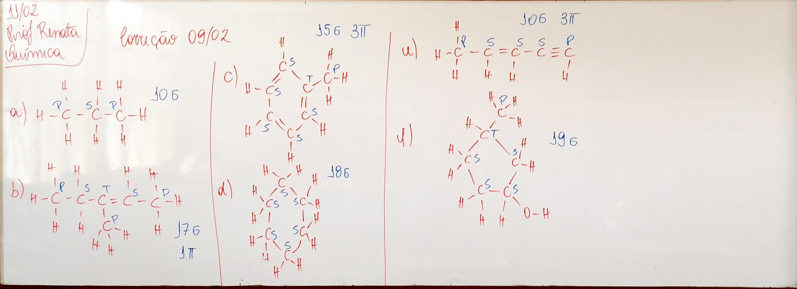
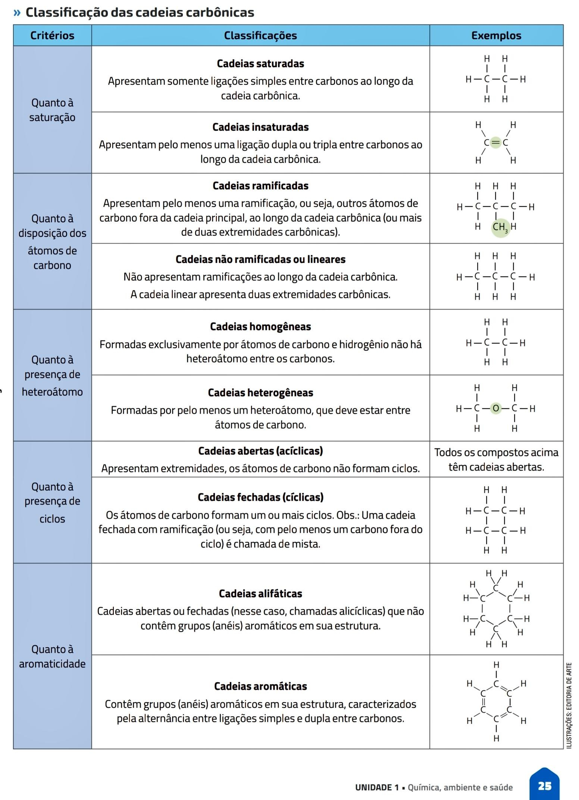
Texto 1: Compostos orgânicos, ecossistemas e impactos ambientais
As intervenções humanas nos ecossistemas envolvem o uso de diversos compostos orgânicos presentes em produtos industriais e comerciais, como combustíveis, agrotóxicos, plásticos e medicamentos. Esses compostos possuem propriedades químicas específicas, relacionadas à sua estrutura de carbono, que influenciam sua solubilidade, toxicidade e persistência no ambiente. Ao serem liberados na natureza, passam a integrar os ciclos da matéria e podem sofrer transformações químicas, acumular-se nos organismos e provocar desequilíbrios ecológicos.
A identificação das principais funções orgânicas, como álcoois, ácidos carboxílicos, hidrocarbonetos, ésteres e aminas, permite compreender como essas substâncias interagem com os seres vivos. Muitas delas podem interferir em processos vitais, afetando a saúde humana ao alterar o funcionamento de enzimas, hormônios e células. Além disso, as reações orgânicas associadas a esses compostos, como a combustão e a oxidação, estão ligadas às transformações e transferências de energia nos ecossistemas, gerando tanto benefícios energéticos quanto impactos ambientais.
O uso de modelos, representações e simulações digitais facilita a análise desses processos, pois permite prever a dispersão, a transformação e os efeitos dos compostos orgânicos ao longo do tempo. Esse conhecimento contribui para a escolha de alternativas mais sustentáveis, reduzindo impactos negativos sobre os ecossistemas e os seres vivos.
1. Quais compostos orgânicos são citados como resultado das intervenções humanas nos ecossistemas?
Os compostos orgânicos citados no texto como resultado das intervenções humanas nos ecossistemas são os combustíveis, os agrotóxicos, os plásticos e os medicamentos, amplamente utilizados em atividades industriais, agrícolas e comerciais.
2. Como as propriedades químicas dos compostos orgânicos influenciam seus impactos ambientais?
As propriedades químicas dos compostos orgânicos, relacionadas à sua estrutura de carbono, influenciam sua solubilidade, toxicidade e persistência no ambiente. Essas características determinam como essas substâncias se dispersam, se acumulam nos organismos vivos e provocam impactos ambientais.
3. Quais funções orgânicas são mencionadas no texto e por que são importantes?
O texto menciona as funções orgânicas álcoois, ácidos carboxílicos, hidrocarbonetos, ésteres e aminas. Essas funções são importantes porque ajudam a compreender como os compostos orgânicos interagem com os seres vivos e como podem interferir em processos vitais do organismo.
5. De que forma as reações orgânicas se relacionam com as transformações de energia nos ecossistemas?
As reações orgânicas, como a combustão e a oxidação, estão relacionadas às transformações e transferências de energia nos ecossistemas, podendo gerar benefícios energéticos, mas também causar impactos ambientais.
6. Por que o uso de simulações e modelos digitais é importante para prever os efeitos das ações humanas no ambiente?
O uso de simulações e modelos digitais é importante porque permite prever a dispersão, a transformação e os efeitos dos compostos orgânicos ao longo do tempo, auxiliando na escolha de alternativas mais sustentáveis e na redução dos impactos ambientais.